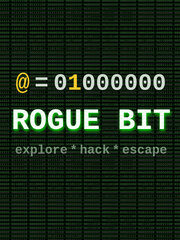

Rogue Bit
Rogue Bit
Detalles
|  | |
| Tiempo de juego | No Jugado |
| Última actividad | Nunca |
| Añadido | 08/10/2023 9:09:25 |
| Modificado | 08/10/2023 9:10:59 |
| Estado de finalización | Not Played |
| Librería | Steam |
| Fuente | Steam |
| Plataforma | PC (Windows) |
| Fecha de lanzamiento | 10/10/2018 |
| Puntuación de la Comunidad | 82 |
| Puntuación de la Crítica | |
| Puntuación de usuario | |
| Género | Indie Simulation |
| Desarrollador | Bigosaur |
| Editor | Bigosaur |
| Característica | Achievements Full Controller Support Includes Level Editor Single Player |
| Enlaces | Punto de encuentro Discusiones Guías Noticias Página de la tienda PCGamingWiki Logros |
| Tag | Difficult Education great-soundtrack Hacking indie logic programming Puzzle Short Simulation Singleplayer |
Descripción
You play the game as a single bit of computer memory. You can invade other bytes around you and thus modify their values.
The game features various types of puzzles:
Explore
With ability to XOR into adjacent bytes, you can navigate your way through existing data in the memory. The game automatically marks the bytes you cannot go through without getting yourself overwritten and prevents you entering those. Both binary and ASCII views are available, which you can utilize to find an open path for a particular puzzle.
Decipher programs
Various programs run on the computer you are trying to escape from. The game includes a disassembler showing you the assembly language corresponding to the machine code that is being executed. Don't worry if you don't know any Assembly. There are only a handful of CPU instructions and they are introduced gradually as you complete the puzzles. Reading the assembly code, you can track the program logic, see which parts of RAM it reads and writes to and manipulate data in those locations to get the program to do what you want.
Invade CPU registers
The computer you are trying to escape has a simple CPU with a couple of registers. You can trick the CPU to load yourself into the registers and affect code execution or offload yourself into otherwise unreachable memory locations.
Hack
For some puzzles, it isn't enough to change the data in RAM or registers. You can also change the machine code to get the computer to do different things.
Tips
Carefully observe the bytes on the screen and what the CPU is doing. Sometimes you need to read the code in straightforward manner. Sometimes you need to work your way backwards: find the line of the code you want executed and then trace the code backwards to figure out how to trick the CPU to get to that instruction.
The game only has about 30 puzzles, but some of those might take considerable effort to solve. So take it easy and don't rush to the end. If you solve a puzzle by accident, don't go forward until you understand why it happened. You might miss some small detail and get completely stuck on the next puzzle.
TL;DR
The game is about the way computers work internally. This isn't a game about writing new programs, but hacking existing programs and their data to clear the path or teleport across memory until you find a way to escape the computer completely.
Having some programming knowledge makes the game easier, but it isn't required. All the elements required to solve the puzzles are explained in the game. As long as you like doing basic math, you should be able to figure it out. That being said, it isn't a game for general population. It's meant for players who are interested in computer internals, assembly and machine languages and programming.